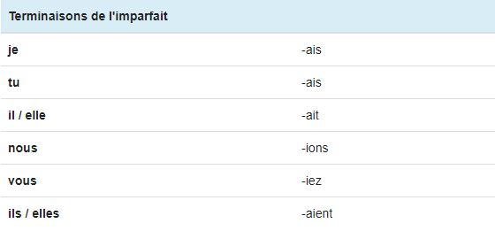
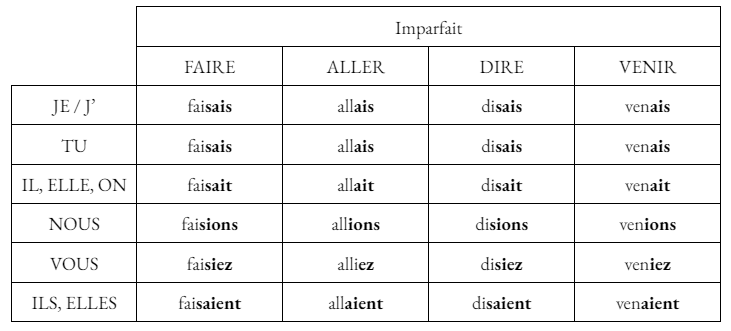
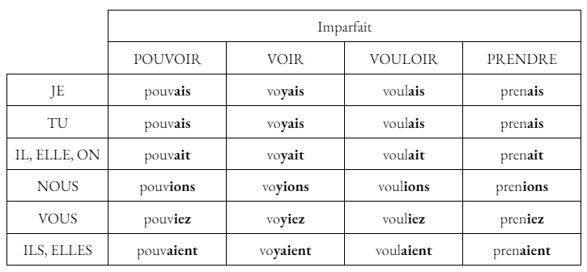
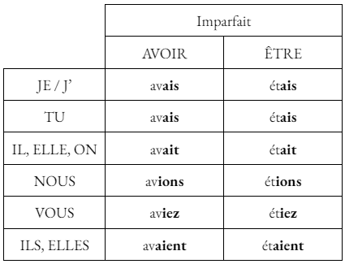

L'Imparfait de l'indicatif
Utilisation
L'imparfait exprime généralement une action passée, inachevée. Dans un récit, il est utilisé en association avec le passé simple.
Exemple : "Pendant que je marchais , il me demanda comment je me sentais."
Terminaisons
Les terminaisons de l'imparfait de l'indicatif sont identiques pour tous les verbes de tous les groupes: -ais, -ais, -ait, -ions, -iez, -aient. A noter qu'il est possible d'obtenir deux i consécutifs avec ces terminaisons lors de la conjugaison à l'imparfait: "nous priions", "vous priiez".

Conjugaison des verbes faire, aller, dire, venir, pouvoir, voir, vouloir et prendre
 
Auxiliaires
Voici la conjugaison des auxiliaires avoir et être à l'imparfait de l'indicatif. Ces deux auxiliaires à l'imparfait permettent notamment de construire le plus-que-parfait de l'indicatif.

Premiers exercices
Exercices à faire au maximum sans l'aide de la leçon.
Conjuguez le verbe attendu, à la personne attendue, à l'imparfait. Ne pas écrire le pronom, ne pas mettre de majuscule ni d'espace !
Si tu as réussi pour ces verbes, je te conseille de cliquer ici pour t'entraîner sur des verbes et des pronoms aléatoires : Exercice final de l'imparfait